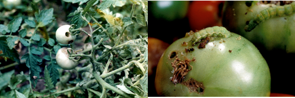
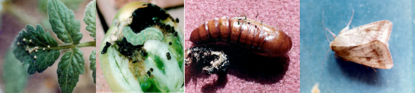

TOMATO :: MAJOR PESTS :: FRUIT BORER
1.FRUIT BORER: Helicoverpa armigera (Noctuidae: Lepidoptera)
For distribution and status, host range, damage symptoms, bionomics refer cotton
Single caterpillar can destroy 2-8 fruits.
|  |
|---|
Bionomics
|  |
|---|
Management
- Collect and destroy the infested fruits and grown up larvae.
- Grow less susceptible genotypes Rupali, Roma, Pusa red plum.
- Grow resistant cultivars like BT 1, T 32, T 27, Punjab Kesri, Punjab Chuhashu, Pant Bahar, Azad Pusa Hybrid 4
- Grow simultaneously 40 days old African tall marigold and 25 days old tomato seedling at 1:10 rows to attract Helicoverpa adults for egg laying.
- Set up pheromone trap with Helilure at 15/ha and change the lure once in 15 days.
- Release T. chilonis 6 times@ 50,000/ha per week coinciding with flowering time based on ETL.
- Release Chrysoperla carnea at weekly interval at 50,000 eggs or grubs / ha from 30 days after planting.
- Spray any of the following insecticides with 500 L water/ha
|
|
|
|
|
|
|
|
|
|
|
|
- Do not spray insecticides after maturity of fruits.
- Encourage activity of parasitoid Eucelatoria bryani, Campoletes, Chelonus etc.,